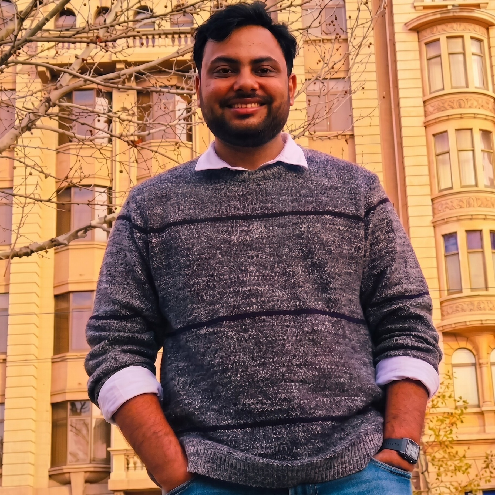

I am a PhD Scholar in Economics at the Department of Economic Sciences, IIT Kanpur, pursuing my doctoral research under the supervision of Dr. Sukumar Vellakkal. My research interests lie at the intersection of Development Economics, Health Economics, and Applied Econometrics.
My work utilizes rigorous empirical methods to evaluate how structural changes such as digital expansion, regulatory policies, and urbanization shape public health, nutrition, human capital, and food security at the micro-level in India.
I hold an M.A. in Economics from Jamia Millia Islamia and a B.A. (Hons.) from Ramjas College, University of Delhi.
Outside of academics, I am a passionate traveler who enjoys exploring new landscapes, observing wildlife, and discovering regional cuisines.